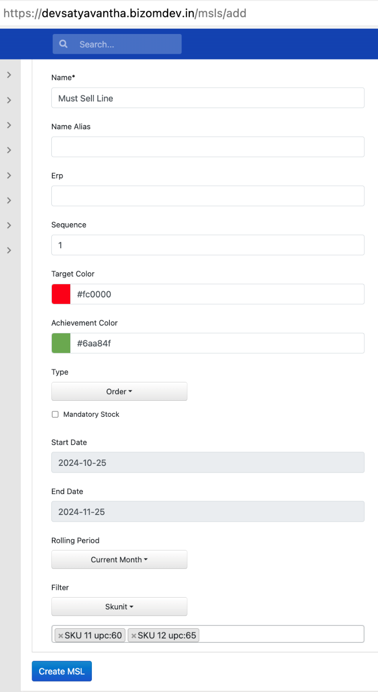
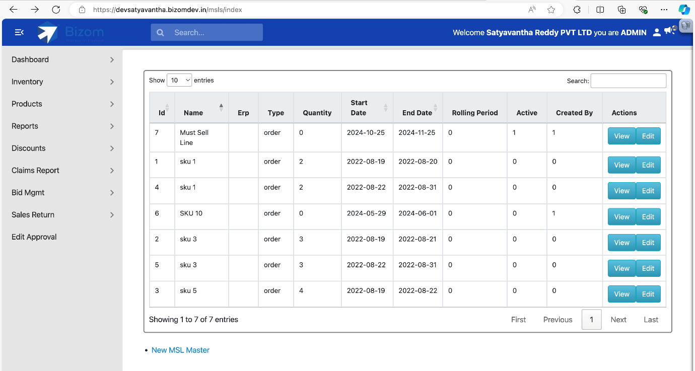
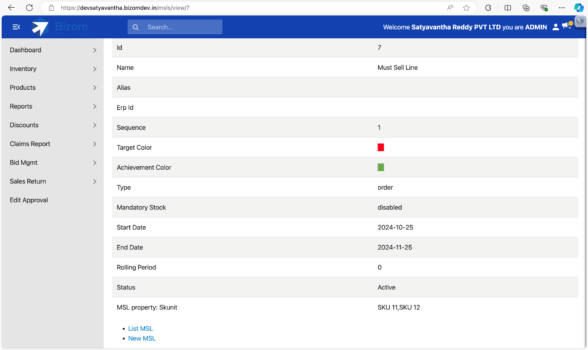
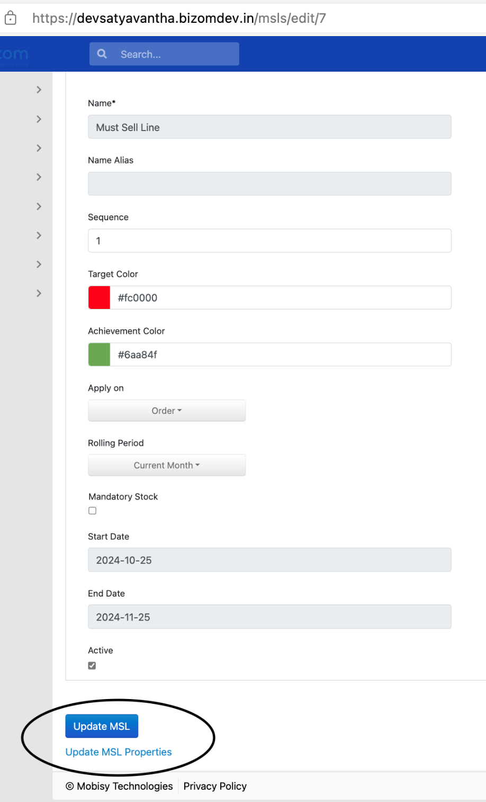
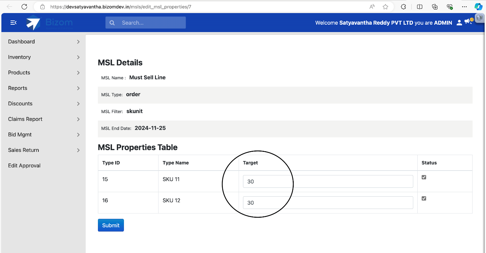
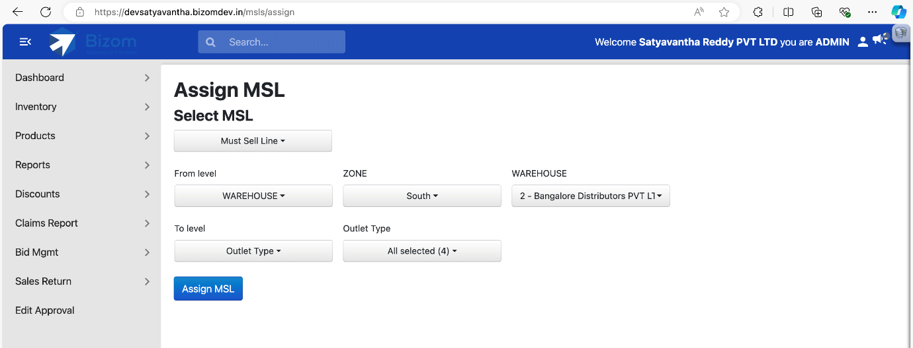
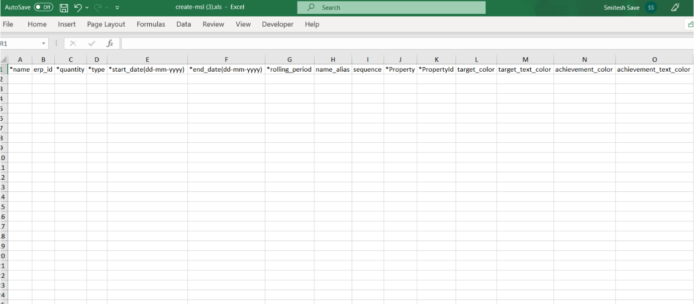
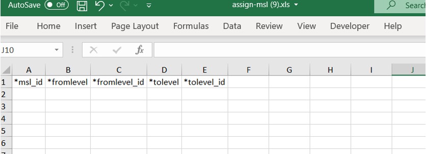
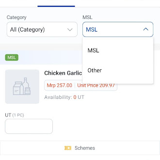
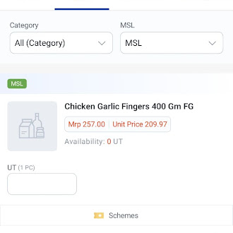

1. What is an MSL?
MSL stands for Must Sell SKU/Line, a target quantity set against a group of SKUs (by variant, category, subcategory, brand, sub-brand or individual SKU) that the field team is expected to sell within a period. Once assigned to a level of the network, the target and how close a rep is to hitting it show up directly in the app's order and sale screens.
MSLs can be configured two ways:
- Web UI: quicker for one-off MSLs, but the target can only be added while editing, not while creating.
- MDM uploads: fewer restrictions, and the only way to create or assign MSLs in bulk.
2. Creating an MSL
Here's how to create an MSL through the Bizom web UI:
Go to
yourcompanyurl.bizom.in/msls/addFill in the MSL details
Field What it means Name Name of the MSL being created. Name Alias Alias that appears on the transactional (order/sale) screen instead. Erp ERP code for the MSL, if you integrate with an external system. Sequence Display order on the transactional screen. Target Color Background colour shown for SKUs added to the MSL, before the target is met. Achievement Color Background colour shown once the target has been met. Type Sale, Order, or Delivery. Start / End Date Start date can be today or later; end date must be after the start date. Rolling Period Current month, -1, -2 or -3 months. A value of -3 means the achievement is calculated over the current month plus the last 2 months. Filter The SKU entity the MSL is built on, Variant, Category, Subcategory, Brand, Sub-Brand or individual SKU. 
Create MSL, filled in with an example Click Create MSL
The MSL has been created, the target itself is added afterwards, from Edit (see below).
NoteThe web UI restricts adding the target while creating an MSL, it can only be added once you edit the MSL afterwards.
3. Viewing MSLs
Go to
yourcompanyurl.bizom.in/mslsEvery MSL created so far is listed here.

List MSL Click View to drill into one

MSL details, including which SKUs it's built on
4. Editing an MSL
From the MSL list, click Edit

Edit MSL: Update MSL saves the header fields; Update MSL Properties sets the target Update the fields that need changing
Sequence, Target Color, Achievement Color, End Date, and whether the MSL is active can all be updated here. Click Update MSL to save.
Add or change the target via Update MSL Properties
This opens the MSL Properties table, enter the target for each SKU/type, use the checkbox to keep it active (unchecking removes that entry from the MSL), then click Submit.

MSL Properties, set the target per SKU
WarningOnce an MSL's end date has passed, its properties can no longer be edited, only the target and active status can still be changed.
5. Assigning an MSL
An MSL isn't visible anywhere until it's assigned, this maps it from a "From Level" to a "To Level" of the transaction (order/sale/fulfilment).
Go to
yourcompanyurl.bizom.in/msls/assignFill in the assignment details
Field What it means Select MSL The MSL you want to assign. From level Zone, Subzone, or Warehouse. To level Warehouse Type (for primary), Warehouse, Outlet, Outlet Type, or Outlet Category. 
Assign MSL screen, filled in with an example Click Assign MSL
The mapping is complete, the MSL is now live for that level.
6. Bulk MSL management via MDM
MDM uploads have fewer restrictions than the web UI, the target can be set directly at creation, and both creating and assigning support bulk uploads.
Creating MSLs via MDM
Go to
yourcompanyurl.bizom.in/mdmsSearch "create msl" and click the upload icon under Actions.
Download and open the template

Create MSL MDM template Fill in the template
Create MSL MDM columns
Column Notes nameName of the MSL to be created. erp_idERP ID, if importing from another system. quantityTarget quantity. typesale, order, or delivery. start_date(DD-MM-YYYY)MSL start date. end_date(DD-MM-YYYY)MSL expiry date. rolling_periodWhether the same MSL repeats the following month, supported up to 3 months. name_aliasAlias shown on the transactional screen. sequenceDisplay order on the transactional screen. propertyThe SKU entity level: SKU, design type, category, subcategory, etc. property_id(comma-separated)Bizom ID(s) for whatever was entered in property, SKU ID, category ID, design type ID, etc.target_color/target_text_colorBackground and text colour shown for SKUs added to the MSL. achievement_color/achievement_text_colourBackground and text colour shown once the target is met. Save the file and upload it
Click the upload icon, then Validate Data, once validation passes, click Save Data to create the MSLs.
Assigning MSLs via MDM
Go to
yourcompanyurl.bizom.in/mdmsSearch "assign msl" and click the upload icon under Actions.
Download and open the template

Assign MSL MDM template Fill in the template
Assign MSL MDM columns
Column Notes msl_idBizom ID of the existing MSL to assign. fromlevelZone, Subzone, or Warehouse. fromlevel_idThe zone/subzone/warehouse ID matching fromlevel.tolevelWarehouse Type, Warehouse, Outlet, Outlet Type, or Outlet Category. tolevel_idThe matching ID for whatever was entered in tolevel.Save the file and upload it
Click the upload icon on the "assign msl" MDM page, then Validate Data followed by Save Data to complete the mapping.
7. MSL in the app
MSLs are visible in the Order, Sale and Order Fulfilment screens of the app. Under the Category and Subcategory filters, select MSL and then the specific MSL configured, SKUs the MSL is built on are then highlighted right in the list.


MSL SKUs are shaded using the colours set during creation, one for "target not yet met" and one for "achievement met", updated in real time as the rep enters quantities. In the Order summary screen, MSL SKUs not yet ordered show in the target colour; SKUs whose target has already been met drop off the summary. Tapping the SKU name surfaces the full set of MSL SKUs at the top of the order/sale screen.
MSL SKUs can also be filtered using the Filter option at the top of the screen, and sorted using the sort feature.
Was this guide helpful?